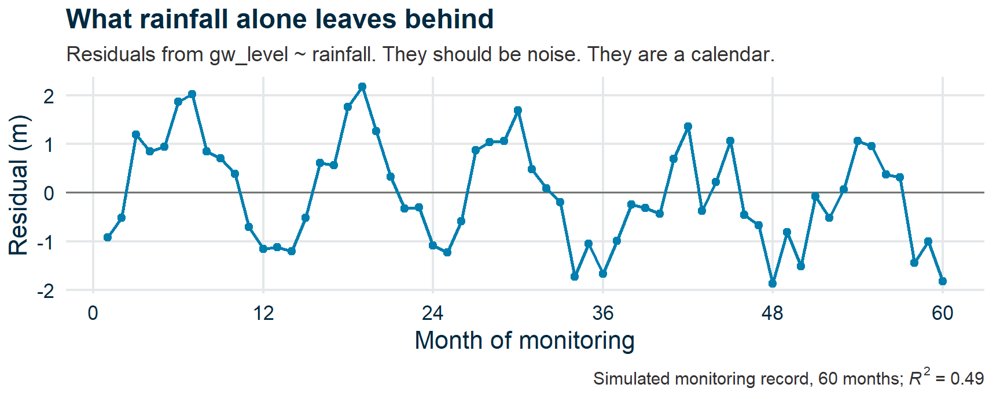

Models and their limits
Research Skills — Week 7
Today's exercises
Recap
11:05
Recap
- Modelling gas generation
- Fit and interpret
- Choosing a model
- Quick reflection
- Wrap-up
Where we are
11:05
You can now test whether two groups differ, and say how big the difference is.
This week: models.
A model is a simplified story about how the world works. The question is always: how much does it capture, and what does it leave out?
Questions?
11:05

Submit questions:
PollEv.com/geol
text geol to 07480 781235
Modelling gas generation
11:08
- Recap
Modelling gas generation
🎓💻 Live code
- Fit and interpret
- Choosing a model
- Quick reflection
- Wrap-up
What is a model?
11:08
A deliberate simplification that captures some features of reality and ignores others.
All statistical tests include models: the t-test models the data as two normal distributions, one per group.
Today we make the model explicit, and build one up live:
\[y = \beta_0 + \beta_1 x + \varepsilon\]
“y changes by β₁ for every one-unit change in x, plus noise.”
(aka \(y = mx + c\): Linear regression)
How much of our electricity comes from gas?
11:11
Could chance draw this line?
11:14
What else does R know about the line?
11:17
Does a straight line fit?
11:20
The line and its uncertainty, on the points
11:23
Polished version: w07-gas-annual.R
A curve?
11:26
Polished version: w07-gas-annual.R
Is the curve better?
11:29
Which do you believe? What is the model not capturing?
HolmesCo’s extrapolation
11:32
⚒️ HolmesCo
Geological Consultants Since 2019
“For Trends That Hold Water”™
“Our linear trend in groundwater decline predicts the aquifer will be empty by 2028.”
What would you need to know before believing this?
Fit and interpret
11:35
- Recap
- Modelling gas generation
Fit and interpret
✏️💻 Exercises 1 and 3
- Choosing a model
- Quick reflection
- Wrap-up
Your turn
11:35
Exercise 1: solar panel output against panel temperature.
Before you plot: do hotter panels produce more power, or less?
Exercise 3: HolmesCo’s groundwater model. Reproduce it, then plot what it left behind.
⚒️ HolmesCo
Geological Consultants Since 2019
“Our Trends Hold Water”™
Linear model: groundwater level ~ rainfall. R² = 0.49.
“Rainfall is the dominant control on groundwater levels.”
What’s wrong?
11:48

- The residuals show a seasonal pattern: the model is missing a time-dependent structure
- R² = 0.49 means 51 % of the variation is unexplained
- “Dominant” is a stretch when your model misses more than it captures
Choosing a model
12:00
- Recap
- Modelling gas generation
- Fit and interpret
Choosing a model
🎓💻 Live code
- Quick reflection
- Wrap-up
A fair comparison: AIC
12:00
\[\mathrm{AIC} = 2k - 2 \ln \hat{L}\]
k coefficients; L̂: how likely the data are under the fitted model.
What is our model missing?
12:09
Time doesn’t burn gas. What drives how much gas the UK burns for electricity?
| You said | In elec |
|---|---|
| Coal, nuclear, wind, solar, biomass | coal_twh, nuclear_twh, wind_twh, solar_twh, bioenergy_twh |
| Demand | total_twh |
| Gas price | gas_price (p/kWh, cash terms) |
| Carbon price | carbon_floor (TRUE from 2013) |
| Weather | temp_c (°C, Central England) |
| Interconnectors | imports_twh (net) |
| The economy | gdp (£ billion) |
| COVID | covid (2020–21) |
Did the extra terms help?
12:18
Let R choose: step()
12:27
step() can only choose from what you gave it.
What is the model not capturing?
12:36
Overfitting: too much faith in your data (a degree-12 curve through 26 years).
Extrapolation: too much faith in your model (no gas by 2028).
Blind spots: too much faith in your framework (step() chose from our list, and only ours).
Quick reflection
12:45
- Recap
- Modelling gas generation
- Fit and interpret
- Choosing a model
Quick reflection
✏️ One sentence
- Wrap-up
Write one sentence
12:45
“In my project, the biggest thing my analysis might be missing is…”
Wrap-up
12:50
- Recap
- Modelling gas generation
- Fit and interpret
- Choosing a model
- Quick reflection
Wrap-up
Key points
12:50
- A model is a simplification:
lm(outcome ~ a + b) - A slope’s p-value: how often a null world draws a line this steep
- Check the diagnostics: residuals don’t lie
- R² always rises; AIC charges for each coefficient
step()can only choose from what you gave it- Always ask: “What is my model not capturing?”
Any questions we missed?
12:50
Submit questions:
PollEv.com/geol
text geol to 07480 781235
Next time
12:53
Application session: “Fitting and breaking models”
You’ll fit models to your data — and deliberately try to break them.
Suggested reading
12:53
- Altman & Krzywinski, “Association, correlation and causation”, Nature Methods (2015). Reading list
- Altman & Krzywinski, “Simple linear regression”, Nature Methods (2015). Reading list
Attendance
12:53
New login? Drag Attendance QR to the favourites bar.